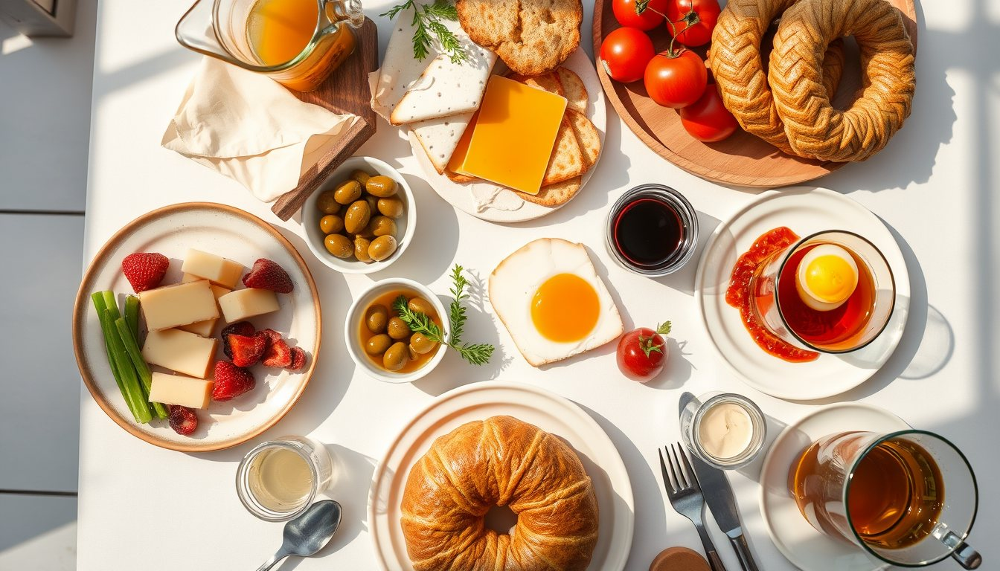
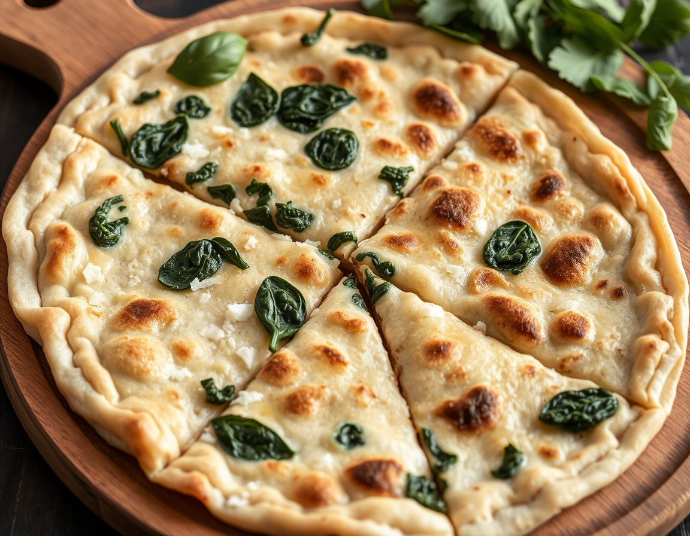
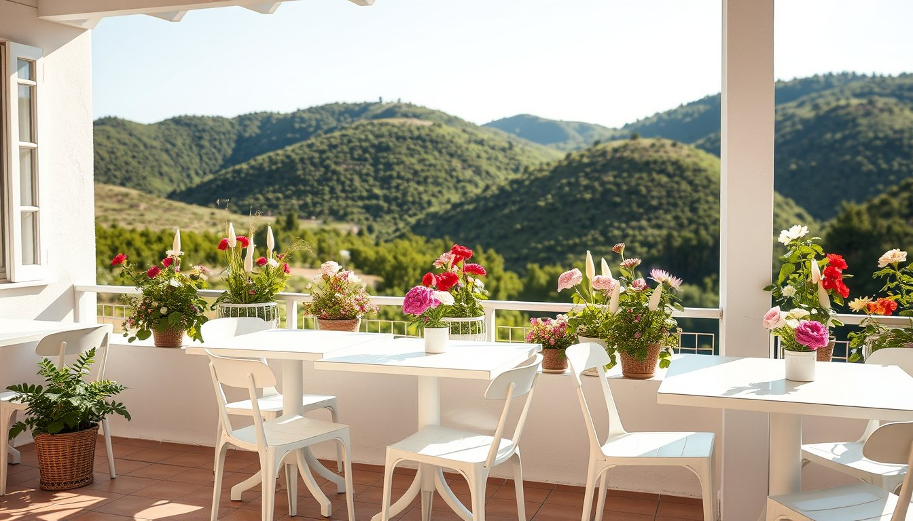

Menemen
Soğanlı ya da soğansız; köy yumurtası, bahçe domatesi.
180 ₺
Serpme kahvaltıyı 08:00 ile 14:00 arasında veriyoruz. Hafta sonu masalar 10:00'da doluyor; rezervasyonsuz gelirseniz 30–40 dakika bekleme olabilir.
Menü mevsime göre değişir; yaz aylarında domates ve biber bahçemizden gelir.
Soğanlı ya da soğansız; köy yumurtası, bahçe domatesi.
180 ₺
Peynirli, patatesli veya ıspanaklı. Sacda, göz önünde.
160 ₺
Petek bal, manda kaymağı ve sıcak ekmek.
220 ₺
Rize'den gelen çay, iki katlı çaydanlıkta 15 dakika demlenir. Kahvaltıyla birlikte sınırsız; siz yeter diyene kadar tazelenir.

Nisan'dan Ekim'e kadar terasta, kışın şömineli salonda.
Rezervasyonlar 15 dakika bekletilir. 8 kişiden büyük gruplar için lütfen telefonla arayın; doğum günü ve kutlama masası hazırlıyoruz.
Otopark: Bahçe girişinde 20 araçlık ücretsiz alan.
Evcil dostlar: Terasta ağırlıyoruz.
0258 000 00 00